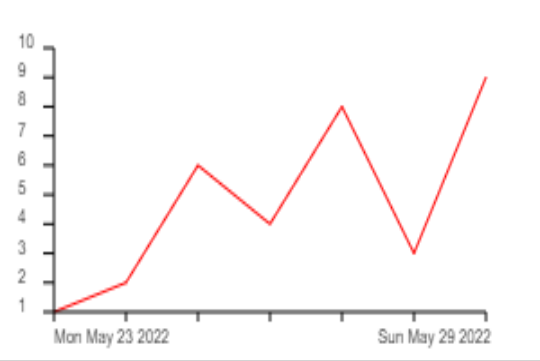

Info
Dies hier ist ein Tagebuch mit Stimmungsbarometer.
Formular
Im Formular unten kann ein Eintrag erfasst werden, bestehend aus folgenden Elementen:
- Eintragsdatum (das Datum auf das sich der Eintrag bezieht)
- Stimmung (Zahl zwischen 1 und 10)
- Text (ein beliebiger Text zum Eintrag)
Eintragsdatum und Text müssen eingegeben werden.
Stimmungsverlauf und Übersicht
Wenn ein Eintrag erfasst wird, wird auf der nächsten Seite der Stimmungsverlauf in einem Graph dargestellt:
Unterhalb des Graphs werden alle bisher erstellten Einträge in chronologischer Reihenfolge (nach Eintragsdatum) dargestellt.